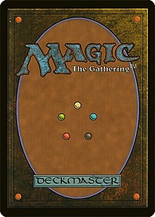
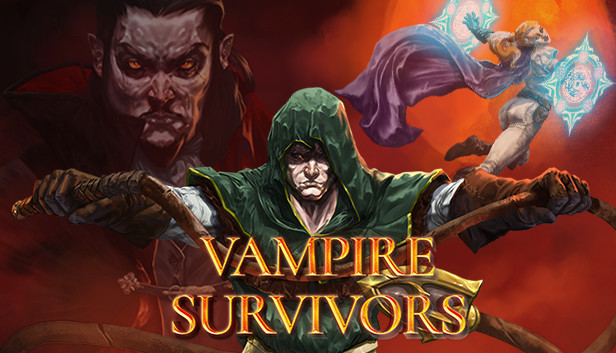
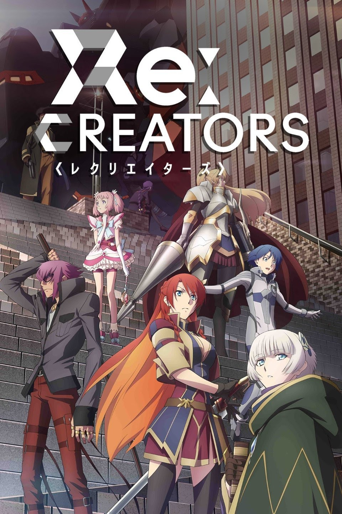

Being the longest running TCG(trading card game), most people within geek circles have at least heard of the game. I started my journey in the summer of 2012 and have been playing ever since.
Ever since the Xbox360, I've had a fascination with in-game achievements. There is something so satisfying about saying "I've done everything there is to do." My current project is Vampire Survivor on Steam.
Like a lot of fans of North American anime fans, I first saw one on the late night channel Toonami. If you were to ask me for a favorite, it'd have to be Re: Creators.
